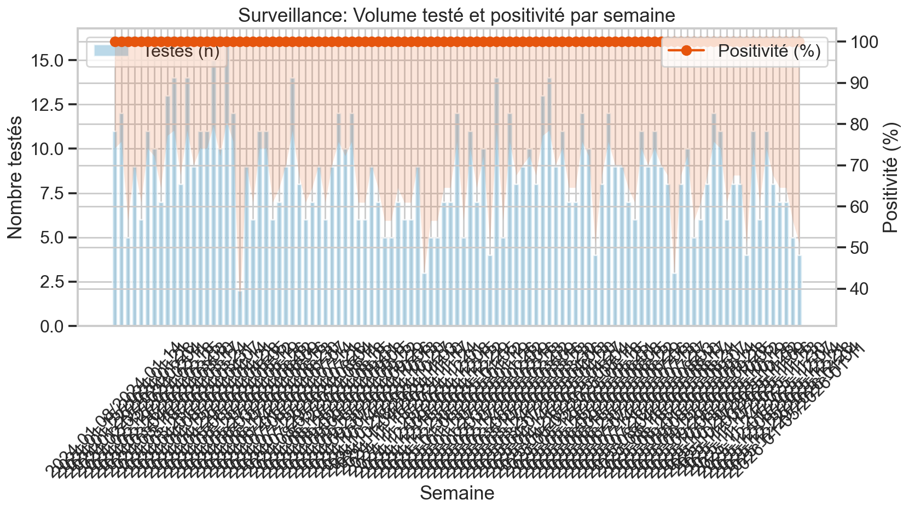
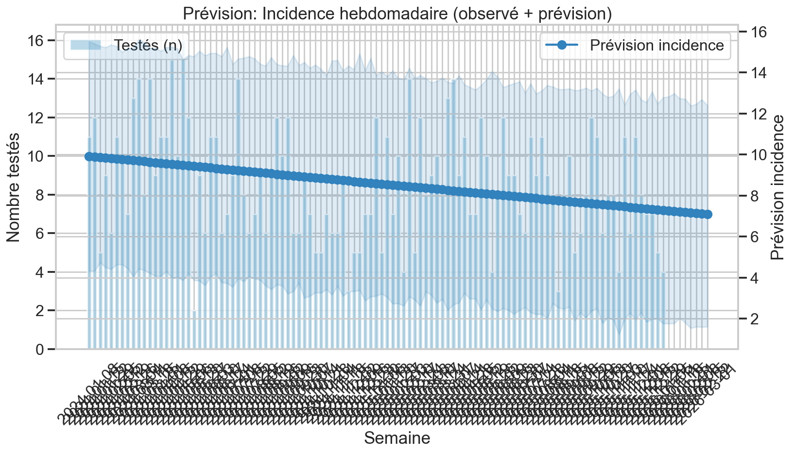
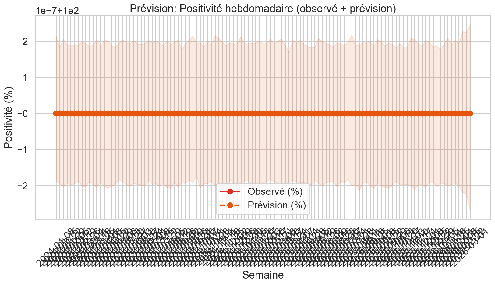
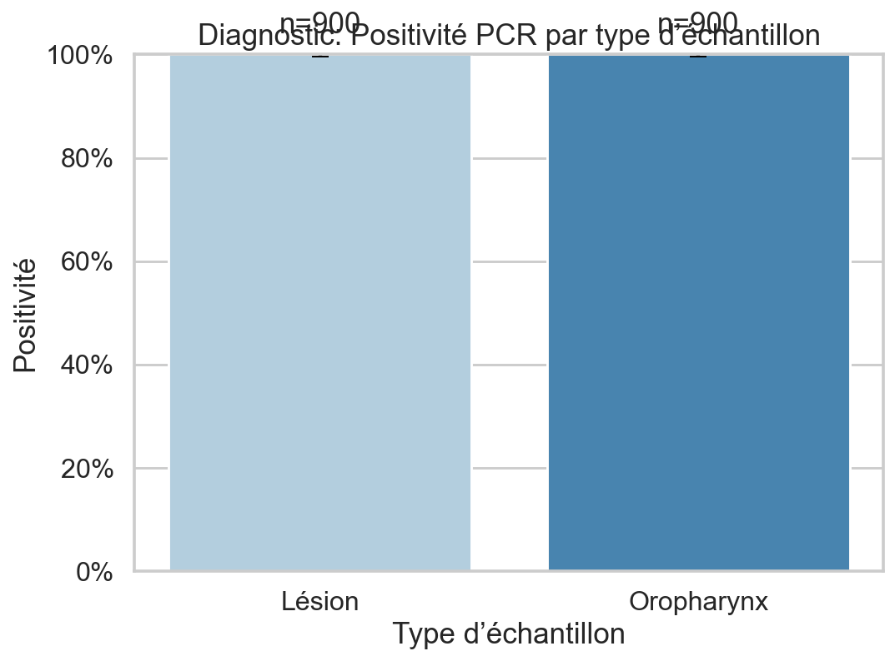
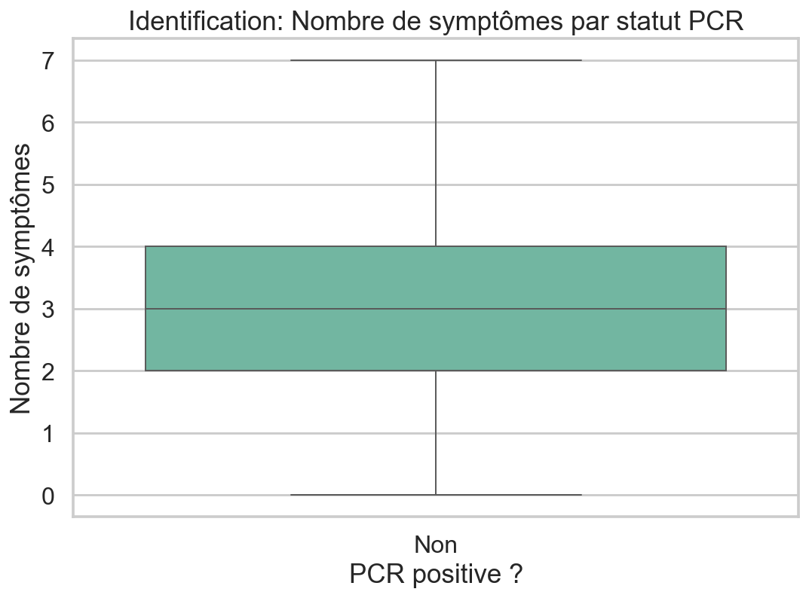
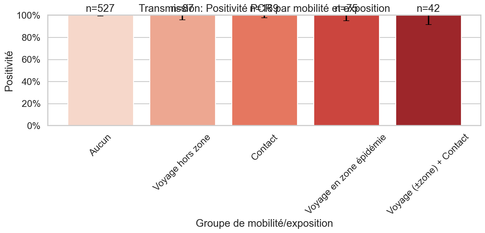
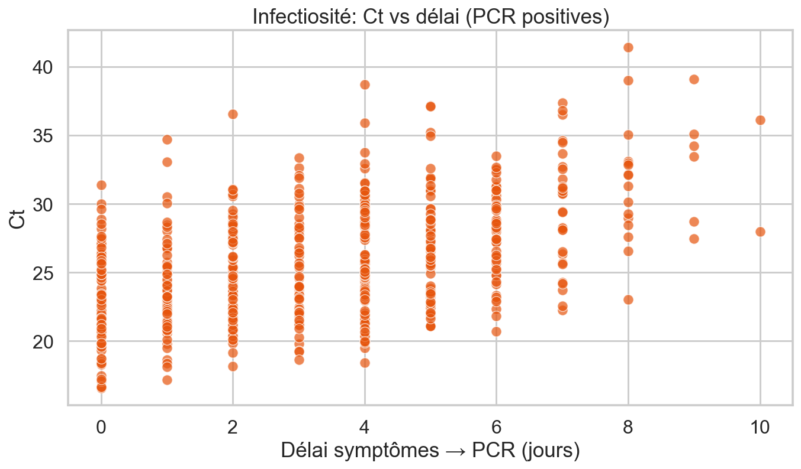
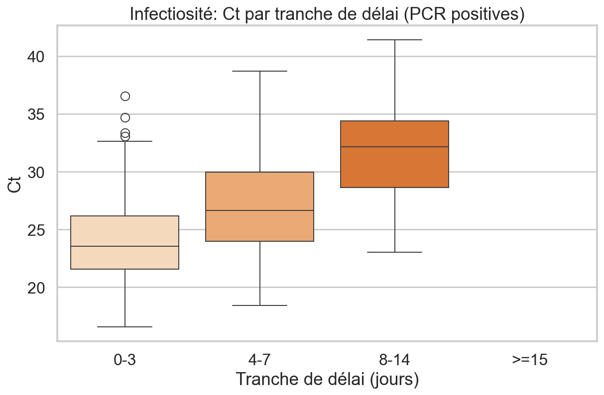
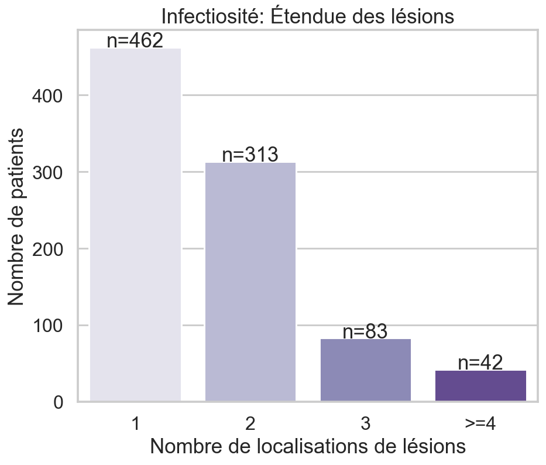
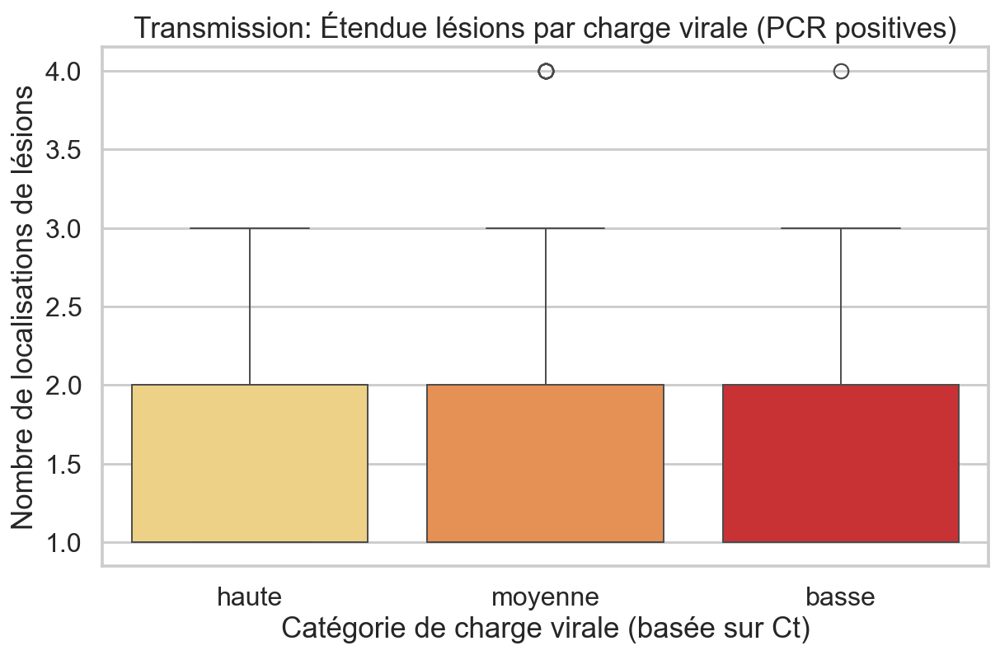

Dashboard MPXV — Local (Opérationnel)
Surveillance: incidence & positivité
01_surveillance_incidence_positivite_semaine.png
15_forecast_incidence.png
15_forecast_positivity.png
Diagnostic: positivité par type d'échantillon
02_diagnostic_positivite_par_type.png
Identification: symptômes et charge clinique
04_identification_nb_symptomes_par_statut.png
Mobilité / Exposition
10_transmission_positivite_par_mobilite.png
Infectiosité: Ct vs délai
03a_infectiosite_ct_vs_delai_scatter.png
03b_infectiosite_ct_vs_delai_box.png
Étendue et localisation des lésions
09_infectiosite_nb_localisations_lesions.png
13_transmission_nb_localisations_par_charge_virale.png
